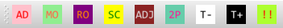
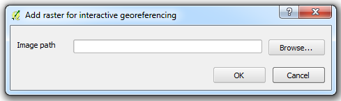
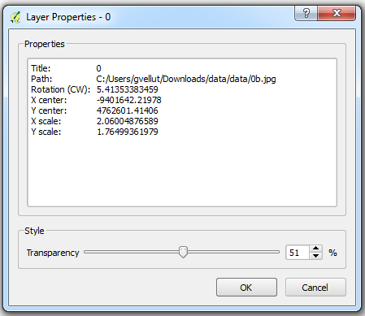
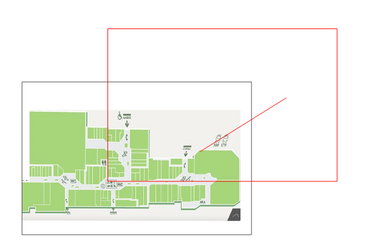
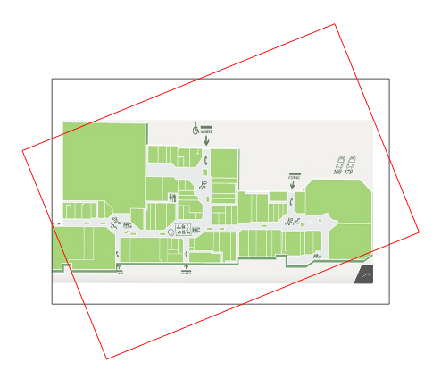
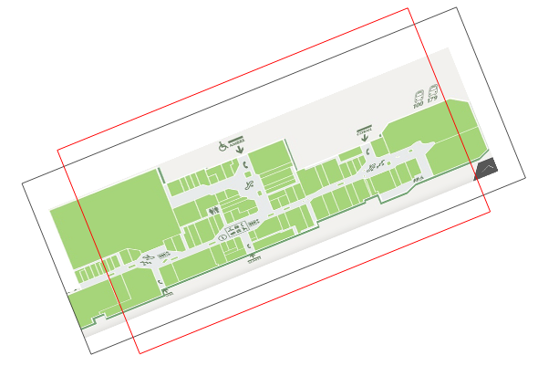
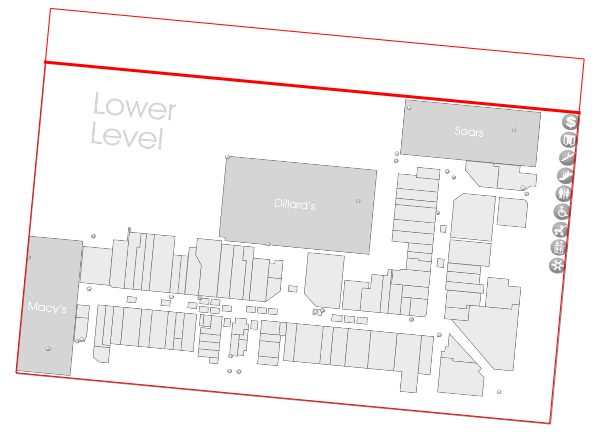
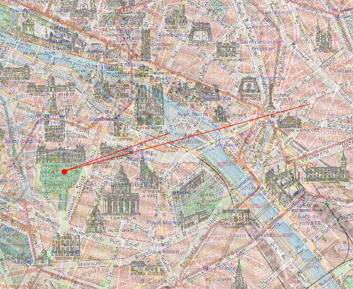
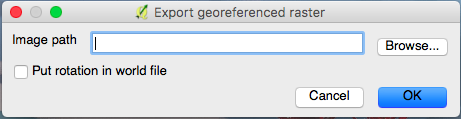

Freehand Raster Georeferencer plugin for QGIS
Date: 2018/03/17
Plugin version: 0.5.x
Source code
The source code is on github: https://github.com/gvellut/FreehandRasterGeoreferencer
Install
The plugin is compatible with both QGIS 2 and QGIS 3.
In QGIS, open the "Plugins" > "Manage and install plugin" dialog. Install the "Freehand raster georeferencer" plugin.
Usage
The plugin installs the following UI elements:
- An “Add raster for interactive georeferencing” tool under the “Raster” > “Freehand Raster Georeferencer” menu
- The same functionality is also available in the “Manage Layers” toolbar
-
A “Freehand raster georeferencing” toolbar is installed and visible by
default. It can be hidden using the corresponding entry in the “View” >
“Toolbars” menu. This toolbar contains the following tools:
- “Add raster for interactive georeferencing” button (same functionality as what is described above)
- “Move raster” (disabled at first)
- “Rotate raster” (disabled at first)
- “Scale raster” (disabled at first)
- “Adjust sides of raster” (disabled at first)
- “Georeference raster with 2 Points” (disabled at first)
- “Decrease transparency” (shortcut: Alt+Ctrl+B) (disabled at first)
- “Increase transparency” (shortcut: Alt+Ctrl+N) (disabled at first)
- “Export raster with world file” (disabled at first)
Except for the “Add raster for interactive georeferencing” tool, which is always active, the tools of the toolbar become active only when a raster added with the “Add raster ..” tool is selected in the Layers Panel.

“Add a raster for interactive georeferencing” tool

This tool adds a raster to the map. It uses Qt to read and and manipulate the raster and is therefore limited to the formats supported by that library. Note also that the raster layer added by this tool does not have all the capabilities of a normal QGIS raster layer: It is limited to visualization and modification using the provided tools.
Click on “Browse…” to select a file (JPEG, PNG, TIFF or BMP) and OK to load the raster.
As a result, a new layer is created in the Table of Content and is displayed on the map canvas.
When first created, if the image already has some georeferencing information, such as a world file (.jgw, .tfw… depending on the format), it is used as the initial positioning of the raster:
- It may include translation, rotation and scaling
- The freehand georeferencer can then be used to refine the pre-existing georeferencing
- If the image has some CRS information, such as a .aux.xml file, it is checked against the CRS of the map: If they are the same, nothing special is done; If not, there is a reprojection at load time so that the transformation parameters apply to the CRS of the map (no on-the-fly reprojection). Note that the reprojection has limitations and the result will need adjusting to the new CRS. To avoid it, change the CRS of the map before loading the raster
- An information message is shown if pre-existing georeferencing parameters are used
If there is no georeferencing information, the raster is loaded with the following characteristics:
- Its center is at the center of the current extent of the map canvas
- Its scales are the same in both X and Y and are computed so the raster fits in the current extent of the map canvas
- There is no rotation
Properties of the layer can be visualized by double-clicking on the entry in the TOC: A dialog opens where some details about the layer are displayed, including the location of the image file and the transformation parameters that are applied to it (position of the center, scale in X and Y and rotation angle). It is also possible to modify the transparency of the layer: The change of transparency is applied immediately to the raster on the map.

When a raster layer created with this tool is selected in the TOC, the other tools are enabled and can be used to change the transformation parameters applied to the raster. If modified, those parameters are saved along with the QGS project file.
“Move raster” tool

This tool allows the user to change the center of the raster. To use, select the tool in the toolbar then click on the map canvas and move the mouse while holding the mouse button. This defines a translation vector from the first point clicked to the point where the mouse was released: The center of the canvas will be transformed using this vector.
“Rotate raster” tool

This tool allows the user to change the orientation of the raster. To use, select the tool in the toolbar then click anywhere on the map canvas and move the mouse in the vertical direction (in the coordinate system of the screen): If the mouse moves up, the raster will rotate counter-clockwise around its center. Otherwise, the raster will rotate in a clockwise manner.
An optional “Rotate around point” mode is available by using the Ctrl key on Windows and Linux and the Command key (⌘) on Mac OS X, when clicking on the map canvas. In this mode, instead of rotating around the center of the image, the raster will be rotated around the clicked point. The rotation angle will be considered to be 0° when moving directly right of the center of rotation and increasing when moving counterclockwise, up to 360°.
“Scale raster” tool

This tool allows the user to scale the raster independently in both X and Y (in the coordinate system of the raster). To use, select the tool in the toolbar then click anywhere on the map canvas and move the mouse in with the vertical or horizontal direction (in the coordinate system of the screen): If the mouse moves up, the height of the raster is scaled up. Otherwise it is scaled down. It works the same way for the horizontal direction and the width of the raster.
An optional “Uniform scale” mode is available by using the Ctrl key on Windows and Linux and the Command key (⌘) on Mac OS X, when clicking on the map canvas. In this mode, only the horizontal direction of the mouse movement is taken into account and the scaling will be identical in both X and Y of the raster.
If the scale of the raster and its DPI are known (for example, 1:45000 and 200 dpi), a dialog to input this information can be opened by right-clicking on the map canvas while the “Scale Raster” tool is active. Enter the scale and the dpi, separated with a comma (for example, 45000,200). The scaling factor of the raster will then be reset to a value computed with the data provided, identically in X and Y. Note that the CRS of the map should be a projected system (although no check is performed).
“Adjust sides of raster” tool

This tool allows the user to adjust the sides of the raster, one at a time. To use, select the tool in the toolbar then click on the map near the side that needs adjusting: The side closest to the click becomes highlighted in bold red. Then move the mouse in the direction of adjustment (depending on the chosen side, vertically or horizontally in the coordinate system of the raster). The chosen side is moved to the new position while the others stay where they are.
“Georeference raster with 2 Points” tool

This took allows the user to combine move, rotate and uniform scale to georeference using 2 points that are identified in both the background layers and the raster to georeference. To use, select the tool in the toolbar. Then click on the map canvas on the 1st point of the raster and move it to its location on the map: The raster will move with it, just like what happens with the Move tool. The selected point will stay highlighted in red. Then click on the map canvas on the 2nd point of the raster and move it to its location on the map: This time, the raster will rotate and scale instead of actually moving like with the 1st point.
“Decrease transparency” tool
This tool allows the user to decrease the transparency level of the raster, by increment of 10%.
“Increase transparency” tool
This tool allows the user to increase the transparency level of the raster, by increment of 10%.
“Export raster with world file” tool
This tool allows the user to export a version of the raster along with a world file. This raster can then be imported in QGIS or any GIS software that supports georeferencing with world files. When launched, a dialog opens.

Besides a field for the location of the resulting file, there is a “Put rotation in world file” option:
- Since some GIS software do not support rotations in world files, by default (checkbox unchecked), the input image will be modified so that the rotation as well as the scaling factor between the axis are put in the exported image. The world file will then only include the displacement and scaling to world coordinates.
- If the checkbox is checked, the input image will be exported unmodified (apart from a potential file format change) and the world file will include scaling, displacement and rotation. The result will open in QGIS (although transformed) but may not open in other GIS software